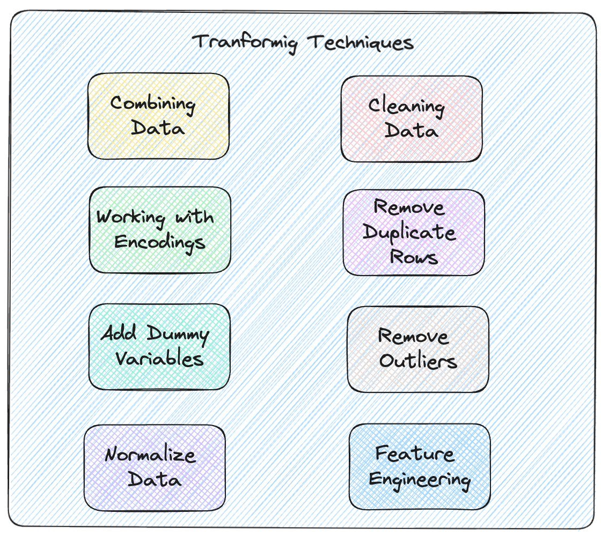
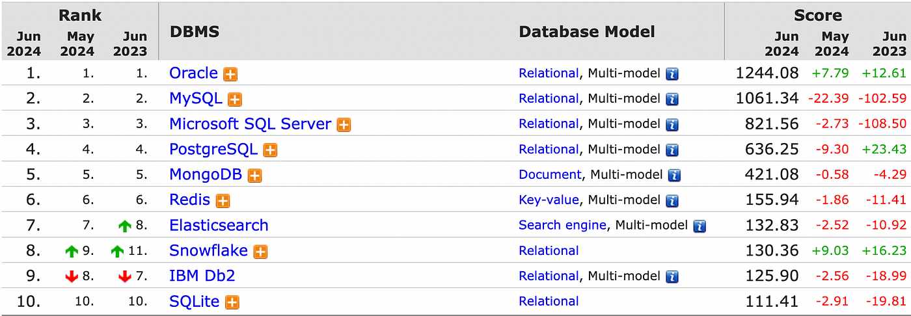

Introduction to ETL Pipelines for Data Scientists
Learn the basics of data engineering to improve your ML models.
January 13, 2025 · ETL
Introduction
It is not news that developing Machine Learning algorithms requires data, often a lot of data. Collecting this data is not trivial, in fact, it is one of the most relevant and difficult parts of the entire workflow. When the data is not good, the algorithms trained on it will not be good either.
For example, recently, I started working on developing a model in an open-science manner for the European Space Agency for fine-tuning an LLM on data concerning earth observation and earth science. The whole thing is very exciting, but where do I get the data from?
In this article, we will look at some data engineering basics for developing a so-called ETL pipeline.
I run the scripts of this article using Deepnote: a cloud-based notebook that’s great for collaborative data science projects and prototyping.
What is the problem?
In data engineering, when we talk about pipelines, we basically talk about moving data from one place to another. In the case of training an LLM, we probably want to scrap text from various sources, such as Wikipedia, open books, datasets on hugging-face, etc. All these data, though are in different places and all have different formats, so the task starts to get difficult.
A very popular type of pipeline when dealing with data is called ETL which stands for extract, transform, load. ETL pipelines precisely deal with extracting data from somewhere (such as Wikipedia), transforming data, for example, from HTML pages into text files, and loading, i.e., loading these files to a place where they are easily retrievable, for example, using MySQL or MongoDB.
Extract
Let’s look at a simple example where we need code to extract information from files of different types using Pandas. These examples are trivial; the main purpose is to understand the workflow.
Let’s suppose to have data in the following formats:
- CSV
id,name,age
1,Alice,30
2,Bob,25
3,Charlie,35- JSON
[
{"id": 1, "name": "Alice", "age": 30},
{"id": 2, "name": "Bob", "age": 25},
{"id": 3, "name": "Charlie", "age": 35}
]- XML
<data>
<person>
<id>1</id>
<name>Alice</name>
<age>30</age>
</person>
<person>
<id>2</id>
<name>Bob</name>
<age>25</age>
</person>
<person>
<id>3</id>
<name>Charlie</name>
<age>35</age>
</person>
</data>- TXT
id,name,age
1,Alice,30
2,Bob,25
3,Charlie,35In this case simple pandas-based functions that extract this data are as follows:
In this case, we can do everything on our local machine, but in real projects, we work with large amounts of data so we have to manage a distributed storage system using tools like Hadoop.
Apache HadoopThis is a release of Apache Hadoop 3.3 line. It contains 117 bug fixes, improvements and enhancements since 3.3.5…hadoop.apache.orghadoop.apache.orgTransform
The second step after extracting the data is to transform them. In the context of data science, this means turning them in a way to be ready for training a Machine Learning algorithm. So we may combine the data, clean it, remove outliers remove duplicates and more. It is often said that a data scientist spends about 80% of his time collecting and arranging data. From my experience, I have seen that working on data quality can help you improve the outcome of a model much more than refining the model itself. In the picture below are some of the steps you can take when working to transform and improve the quality of the collected data.

If you have experience with data science projects the steps you see in the picture will be very familiar to you. Otherwise, a suggestion I will give you to practice is to solve challenges you find on Kaggle. After you have tried your best to implement these steps to optimize the accuracy of your algorithm you can also see other people’s implementation of the same challenge, this will help you a lot
Kaggle Challenges:
Let us now briefly look at how to approach these steps.
- Combining Data: datasets can often be complementary. For example, we have a CSV file with house costs and a JSON file instead that gives us characteristics of the same houses. It might be useful in cases like this to load everything into pandas and join the data using a join
- Cleaning Data: often the columns in our data may not be explanatory, or there were errors when the records were recorded. I always recommend spending time (even hours) simply reading the data manually to get an idea of what might be going wrong and fix it.
- Fixing Encodings: Consider textual data, these are converted to binary so that the computer can process them. But based on what do we do this conversion? Based on the encoding used. We need to understand what encoding is used for each file in order to read it well, otherwise we may have errors in reading accents or special characters. Some types of encoding you may have heard of are ASCII, UTF-8 or UTF-16, for example.
- Missing Data: one thing you are bound to encounter is missing data. For this case, you will have to decide whether to delete the raw of the missing data or to impute the data, then try to fill it with an estimate based on a statistic such as the mean, or the fashion.
- Remove duplicate rows: Obviously, the same repeated data is useless and it is better to delete it. Often, however, recognizing duplicate data can be complex because it occurs in files that are in different formats. It is much easier to recognize them when the datasets have already been combined.
- Dummy Variables: if you have a categorical column that can take only 3 values, you might consider replacing it with 3 other columns whose value is true or false.
- Outliers: these are points that have very different values from the rest of the dataset and could also be detrimental to your model. They are often removed; the main problem is figuring out which points in the dataset are evidentially outliers
- Feature Engineering: in this step, you will try to add new useful features to your dataset and eliminate others that are not interesting.
Load
Once the data has been transformed, we have to save it somewhere otherwise, the work done will be lost. There are various mechanisms for saving data, such as a relational database if we have structured data, or NoSQL DB for unstructured data.
Sometimes if the data is not very much we could also simply use a CSV file.
In this table, you will find a list of the most used solutions sorted by their trendiness.

Conclusions
In this article we learned the basics of building an ETL pipeline: extraction of data in various formats via Pandas, transforming the same in a manner that added value, and then loading it into appropriate storage solutions. Good ETL processes are at the heart of proper and correct data analysis and have enormous consequences on any machine learning model’s performance. With those skills, you can be confident that your data is well-prepared and ready to serve up valuable insights.
If you are interested in this article, follow me on Medium! 😁
💼 Linkedin ️| 🐦 X (Twitter) | 💻 Website
This article has been published on Towards AI